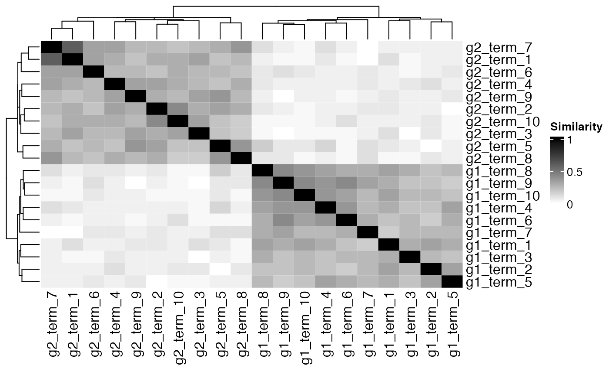

Overview
This vignette is an introduction to the usage of pareg. It estimates pathway enrichment scores by regressing differential expression p-values of all genes considered in an experiment on their membership to a set of biological pathways. These scores are computed using a regularized generalized linear model with LASSO and network regularization terms. The network regularization term is based on a pathway similarity matrix (e.g., defined by Jaccard similarity) and thus classifies this method as a modular enrichment analysis tool (Huang, Sherman, and Lempicki 2009).
Installation
if (!require("BiocManager", quietly = TRUE)) {
install.packages("BiocManager")
}
BiocManager::install("pareg")Load required packages
We start our analysis by loading the pareg package and other required libraries.
Introductory example
Generate pathway database
For the sake of this introductory example, we generate a synthetic pathway database with a pronounced clustering of pathways.
group_num <- 2
pathways_from_group <- 10
gene_groups <- purrr::map(seq(1, group_num), function(group_idx) {
glue::glue("g{group_idx}_gene_{seq_len(15)}")
})
genes_bg <- paste0("bg_gene_", seq(1, 50))
df_terms <- purrr::imap_dfr(
gene_groups,
function(current_gene_list, gene_list_idx) {
purrr::map_dfr(seq_len(pathways_from_group), function(pathway_idx) {
data.frame(
term = paste0("g", gene_list_idx, "_term_", pathway_idx),
gene = c(
sample(current_gene_list, 10, replace = FALSE),
sample(genes_bg, 10, replace = FALSE)
)
)
})
}
)
df_terms %>%
sample_n(5)## term gene
## 1 g1_term_9 g1_gene_12
## 2 g1_term_5 g1_gene_7
## 3 g2_term_2 g2_gene_2
## 4 g1_term_3 bg_gene_47
## 5 g1_term_8 g1_gene_1Term similarities
Before starting the actual enrichment estimation, we compute pairwise pathway similarities with pareg’s helper function.
mat_similarities <- compute_term_similarities(
df_terms,
similarity_function = jaccard
)
hist(mat_similarities, xlab = "Term similarity")We can see a clear clustering of pathways.
Heatmap(
mat_similarities,
name = "Similarity",
col = circlize::colorRamp2(c(0, 1), c("white", "black"))
)
Create synthetic study
We then select a subset of pathways to be activated. In a performance evaluation, these would be considered to be true positives.
active_terms <- similarity_sample(mat_similarities, 5)
active_terms## [1] "g2_term_6" "g2_term_3" "g2_term_3" "g2_term_2" "g2_term_8"The genes contained in the union of active pathways are considered to be differentially expressed.
de_genes <- df_terms %>%
filter(term %in% active_terms) %>%
distinct(gene) %>%
pull(gene)
other_genes <- df_terms %>%
distinct(gene) %>%
pull(gene) %>%
setdiff(de_genes)The p-values of genes considered to be differentially expressed are sampled from a Beta distribution centered at \(0\). The p-values for all other genes are drawn from a Uniform distribution.
df_study <- data.frame(
gene = c(de_genes, other_genes),
pvalue = c(rbeta(length(de_genes), 0.1, 1), rbeta(length(other_genes), 1, 1)),
in_study = c(
rep(TRUE, length(de_genes)),
rep(FALSE, length(other_genes))
)
)
table(
df_study$pvalue <= 0.05,
df_study$in_study, dnn = c("sig. p-value", "in study")
)## in study
## sig. p-value FALSE TRUE
## FALSE 34 17
## TRUE 1 28Enrichment analysis
Finally, we compute pathway enrichment scores.
fit <- pareg(
df_study %>% select(gene, pvalue),
df_terms,
network_param = 1, term_network = mat_similarities
)## Warning: Unknown columns: `NA`## Warning: family beta is still experimental. enjoy with care.
## Warning: family beta is still experimental. enjoy with care.## Loaded Tensorflow version 2.3.0The results can be exported to a dataframe for further processing…
| term | enrichment |
|---|---|
| g2_term_6 | -0.6760687 |
| g2_term_3 | -0.6005415 |
| g2_term_2 | -0.5818557 |
| g2_term_4 | -0.4233026 |
| g2_term_8 | -0.4123425 |
| g1_term_2 | 0.3978593 |
… and also visualized in a pathway network view.
plot(fit, min_similarity = 0.1)